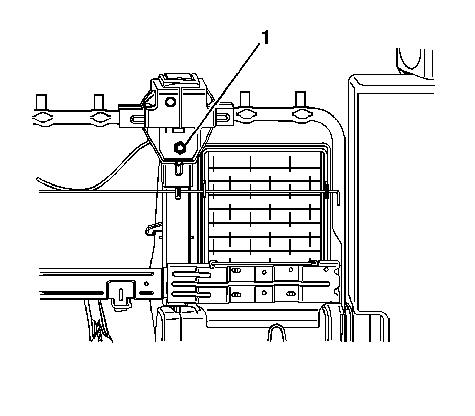

Seat Belt Retractor Replacement - No. 1 Rear Center
Seat Belt Retractor Replacement - No. 1 Rear Center
Removal Procedure
1. Remove the seat. Refer to Rear Seat Replacement (Rear Seat Replacement) .

2. Remove the seat belt retractor bolt (1) from the seat frame.
3. Remove the left seat back. Refer to Rear Seat Number 1 Back Replacement - Left Side (Rear Seat Number 1 Back Replacement - Left Side) .
4. Remove the seat back cover and pad. Refer to Rear Seat Back Cushion Cover and Pad Replacement - Left Side (Rear Seat Back Cushion Cover and Pad Replacement - Left Side) .
5. Remove the latch release assembly. Refer to Rear Number 1 Seat Back Release Latch Replacement (Rear Number 1 Seat Back Release Latch Replacement) .
6. Remove the head restraints. Refer to Rear Seat Head Restraint Replacement (Rear Seat Head Restraint Replacement) .
7. Remove the head restraint guides. Refer to Rear Seat Head Restraint Guide Replacement (Rear Seat Head Restraint Guide Replacement) .
8. Lift the seat belt retractor out of the seat frame.
Installation Procedure
1. Install the seat belt retractor into the seat frame.
Notice: Refer to Fastener Notice (Fastener Notice) .
2. Install the seat belt retractor bolt (1) into the seat frame.
Tighten the bolt to 42 N.m (31 lb ft).
3. Install the seat back cover and pad. Refer to Rear Seat Back Cushion Cover and Pad Replacement - Left Side (Rear Seat Back Cushion Cover and Pad Replacement - Left Side) .
4. Install the latch release assembly. Refer to Rear Number 1 Seat Back Release Latch Replacement (Rear Number 1 Seat Back Release Latch Replacement) .
5. Install the head restraint guides. Refer to Rear Seat Head Restraint Guide Replacement (Rear Seat Head Restraint Guide Replacement) .
6. Install the head restraints. Refer to Rear Seat Head Restraint Replacement (Rear Seat Head Restraint Replacement) .
7. Install the left seat back. Refer to Rear Seat Number 1 Back Replacement - Left Side (Rear Seat Number 1 Back Replacement - Left Side) .
8. Install the seat. Refer to Rear Seat Replacement (Rear Seat Replacement) .